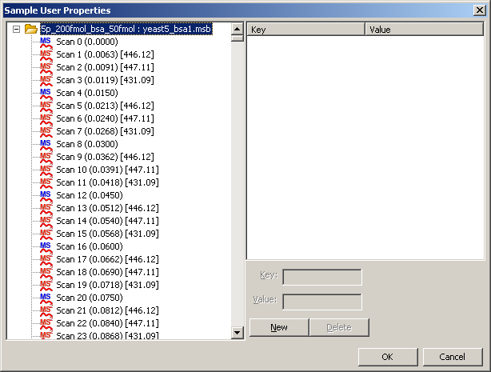

You can add your own properties to spectra, chromatograms or samples in order to record additional useful information that can be saved in the data file. These user-defined properties are shown in the Properties pane below the regular properties, with a "*" character prepended to them to distinguish them.
Note:
Properties added to a sample are displayed in the Properties pane for all spectra and chromatograms within that sample, while those added to individual spectra or chromatograms are shown in the Properties pane for those spectra/chromatograms only. After user properties have been added to a sample in Mass++, Sample Tree displays a "*" character before the sample name to indicate that it has been edited; these changes can be saved by selecting [File] from the menu bar, then [Export] from the drop down menu, and then [Sample].
Select [Edit] in the menu bar and then select [Sample User Properties] from the drop down menu.
The Sample User Properties dialog appears.
The Sample User Properties dialog can also be displayed by clicking the
 icon in the toolbar.
icon in the toolbar.
Select the spectrum, chromatogram or sample to which you want to add user-defined properties.
Click [New], and then enter the Key and Value.
Repeat this step to add more properties.
Click [OK].